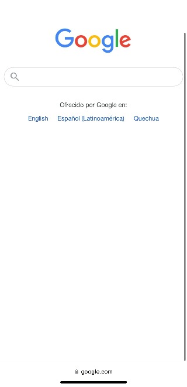
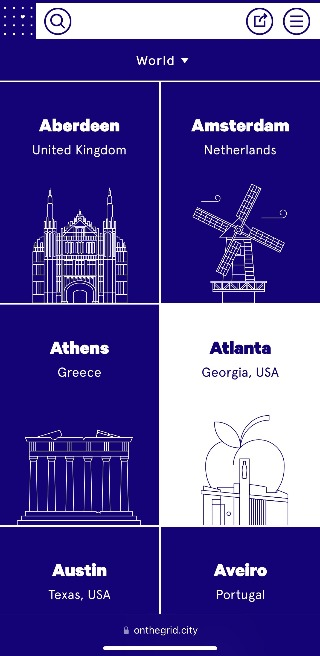
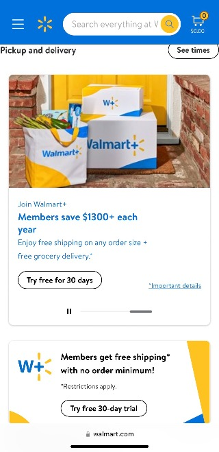

Examples Of Good Design
White Space and Clean Design
Google.com uses such a simple yet effective design. The heavy use of whitespace elgently displays the sites main purpose. To simply search. The search bar is in the center of the page allowing the user to easily and effectivly find the desired purpose. Even when used past the home page for searching white space is used to allow the user to focus on the search results.
PARC: Contrast
Onthegrid.city uses excellent contrast to draw the users eye. When browsing cities and options a deep blue is contrasted with a plain white to allow easy viewing with out the headache or being overwhelmed with hard to read color combinations or too many colors. The simple but effective design makes for an excellent example of contrast, and reminds web-developers that simple is almost always best.
Hick's Law
Walmart.com is probably one of the best examples of Hick's Law. Although being a huge reatail store that gives 1273 options for bread, they're interface is very simple and allows the user to only focus on what they need. Only displaying the latest discounts and deals as well as a search bar makes it easy for the user to navigate and to find what they need.